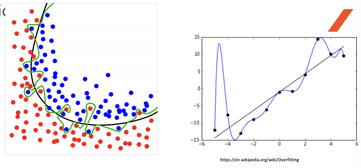
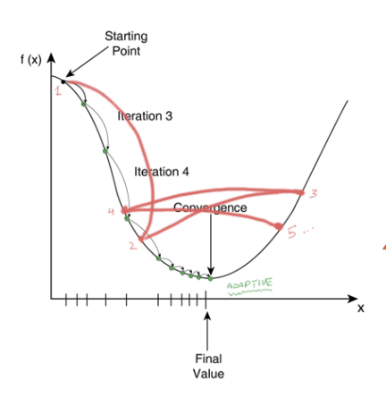
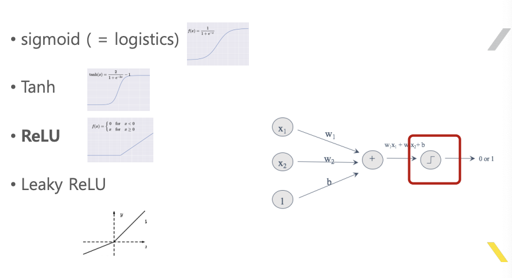

딥러닝
1. 신경망의 노드
- 입력이 가중치만큼 곱해져서 전부 더해진다.
- 이후 특정함수를 거쳐서 출력된다.
2. 학습
- 입력 값들은 가중치에 의해 출력이 결정된다.
- 원하는 출력이 되도록 가중치를 조절하는 것이 학습니다.
- 학습된 결과는 학습된 가중치 들이다.
3. 역전파, 경사하강법
- 역전파 (BP, Back Propagation) 알고리즘
- 경사하강법 (GD, Gradient Descent) 알고리즘
- 가중치를 업데이트 하기 위해 사용되는 알고리즘
4. TensorFlow, Keras
- 이러한 알고리즘과 기타 편의성을 제공하는 프레임워크
- 현재의 딥러닝 개발은 이러한 프레임워크 사용을 기반으로 한다.
- BP, GD와 같은 알고리즘이 지원되며, 실제 구현 시 BP, GD를 몰라도 된다.
5. 딥러닝의 장단점
- 장점 : 대상 함수의 내부를 몰라도 된다. - Black Box
- 단점 : 비싸다 - 많은 연산량을 위한 하드웨어와 데이터
6. ML과 DL의 선택
- 기존방법으로 이미 풀린 문제는 ML
- 기존방법으로 못풀었는데 데이터가 있으면 DL ( 바둑, 얼굴인식, 물체인식, 음성인식, 번역)
7. 딥러닝 트렌드
- 2대 적용 분야 : 자연어, 영상
- 일부 작업은 이미 안정화 단계에 있다
- 영상분류, 영상인식
- Keras의 배포본에 포함
8. 딥러닝의 가장 큰 단점
- 입출력 데이터 쌍을 가진 DataSet을 구하기 어렵다
- 출력 데이터, 레이블링 데이터 (labeling data)
9. 비지도 학습, 강화학습
- 레이블링 데이터 문제를 해결하기 위한 것이다.
- 비지도 학습 : 모델 구조를 통해 레이블링 데이터 없이, GAN
- 강화 학습 : 환경과 동적으로 연동하여 레이블링 데이터를 취득
10. 딥러닝 개발 환경
딥러닝 개발 스택
| 구분 | 내용 |
|---|---|
| 사용자 코드 | 파이썬 |
| 편의성 좋은 프래임워크 | keras |
| 벡엔드 프레임워크 | tensorflow |
| 하드웨어 사용 라이브러리 | cuda/cuDNN |
| 하드웨어 | CPU/GPU |
11. 딥러닝 기술 용어
1) Cost Function 종류
• MSE(Mean Squared Error)
• CE(Cross Entropy)
• KL-Divergence
• MLE(Maximum Likelihood Estimation)
2) Optimizer 종류
• 오차에 대하여 w를 업데이트 시키는 알고리즘들.
• GD(Gradient Descent)
• Batch GD
• Mini-Batch GD
• SGD(Stochastic GD)
• Momentum
• AdaGrad
• AdaDelta
• Adam
• RMSprop
3) Overfitting 방지법 종류
• DropOut
• BN(Batch Normalization)
• Regularization
• Data Augmentation


4) 활성화 함수 종류
• sigmoid ( = logistics)
• Tanh
• ReLU
• Leaky ReLU

5) SoftMax
• activation function중의 하나.
• 최종 출력층에 사용되며, 여러개의 출력 노드의 합 중에 비중의 값으로 나타낸다.
• 확률 처럼 표현된다.
6) Gradient Descent
• 함수가 학습될 바를 정의한 비용함수의 값이 최소로 하기 위해 가중치를 업데이트 하기 위한 알고리즘
7) BackPropagation
• 출력된 값과 원하는 값과의 차이를 가지고 그 전의 w 값들을 변경하는 알고리즘.
• 뒤에서부터 그 오차의 값이 전파된다는 이름.
• 실제 변경되는 값의 크기는 GD로 결정됨